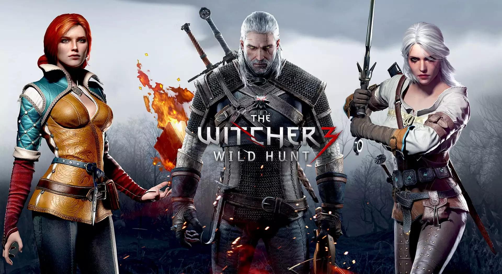
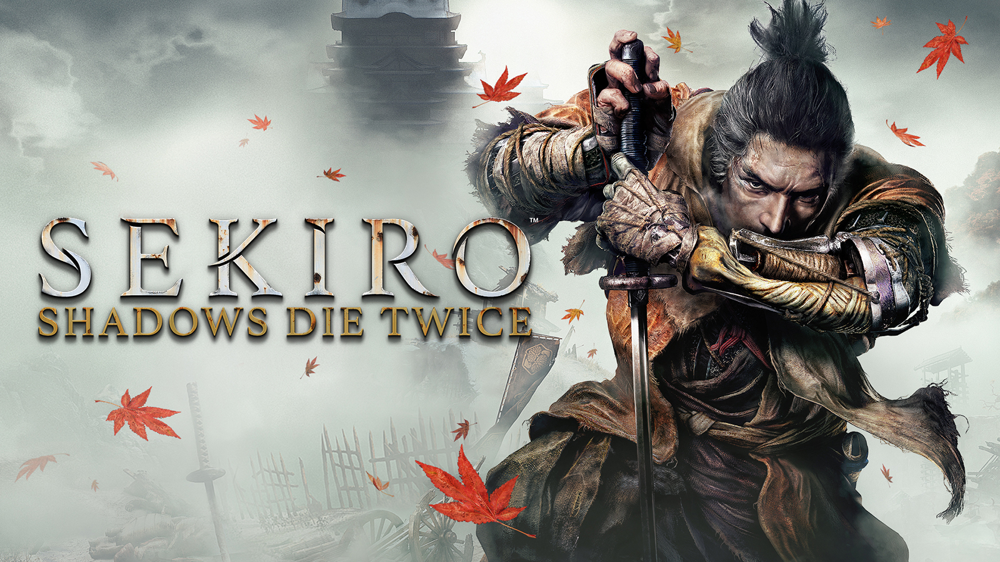
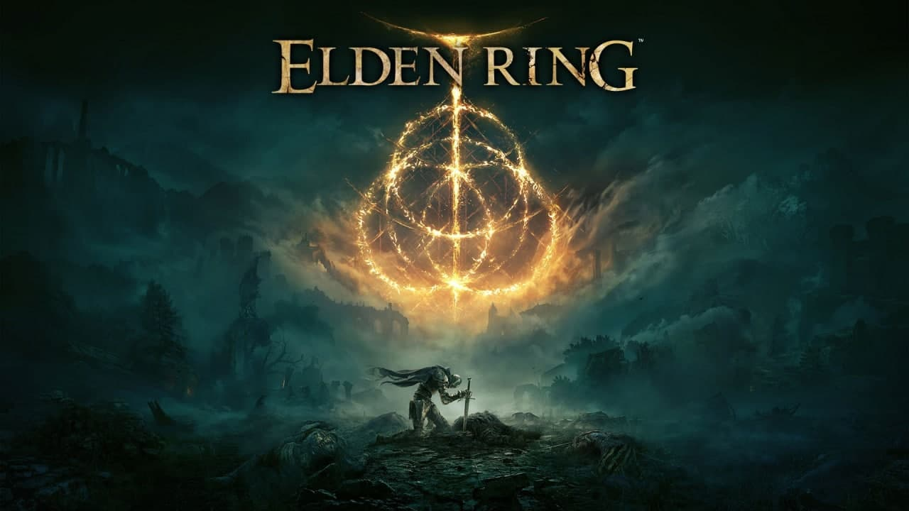
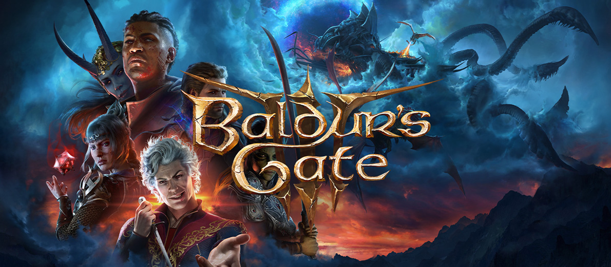

The Game Awards 9/7/2024

The Game Awards— ежегодная церемония награждения, отмечающая достижения в индустрии компьютерных игр. The Game Awards представляет собой масштабное шоу, привлекающее большое внимание СМИ, и проводится в конце календарного года. Помимо собственно вручения наград разработчикам игр, церемония включает в себя исполнение музыки, выступления различных деятелей игровой индустрии, анонсы и трейлеры новых игр. The Game Awards является преемником церемонии Spike Video Game Awards, проходившей ежегодно с 2003 по 2013 год под патронажем телеканала Spike TV. Учредителем, продюсером и постоянным ведущим The Game Awards является канадский журналист и телеведущий Джефф Кили, ранее на протяжении многих лет выступавший в качестве ведущего Spike Video Game Awards.
Dragon Age: Inquisition 9/7/2014

Dragon Age: Inquisition — видеоигра в жанре экшен-ролевая игра 2014 года, разработанная BioWare и изданная Electronic Arts. История следует за персонажем игрока, известным как Инквизитор, в путешествии, чтобы урегулировать гражданские беспорядки на континенте Тедас и закрыть таинственный разрыв в небе под названием «Брешь», который выпускает опасных демонов в мир. Геймплей Dragon Age: Inquisition похож на своих предшественников, хотя он состоит из нескольких полуоткрытых миров , которые игроки могут исследовать. Официально анонсированная в сентябре 2012 года как Dragon Age III: Inquisition , игра была выпущена по всему миру в ноябре 2014 года для PlayStation 3 , PlayStation 4 , Windows , Xbox 360 и Xbox One . После выпуска игра получила положительные отзывы критиков, которые хвалили ее за исследование, игровой процесс, бои, визуальные эффекты, сценарий, персонажей и настройку. Игра получила некоторую критику за свой контент-наполнитель, технические проблемы, тактический вид и аспекты ее повествования.
Ведьмак 3: Дикая Охота 9/7/2015
«Ведьма́к 3: Дикая Охота» — компьютерная игра в жанре action/RPG, разработанная и изданная польской студией CD Projekt RED. Изначально игра была выпущена 19 мая 2015 года на Windows, PlayStation 4 и Xbox One, затем 15 октября 2019 года на Nintendo Switch, а 14 декабря 2022 года — на PlayStation 5 и Xbox Series X/S. Является продолжением игр «Ведьмак» (2007) и «Ведьмак 2: Убийцы королей» (2011). Это третья игра, действие которой происходит в литературной вселенной книжной серии «Ведьмак», созданной польским писателем Анджеем Сапковским, а также последняя, которая повествует о приключениях Геральта из Ривии. Игра в стиле фэнтези, мир которой основан на славянской мифологии, повествует о ведьмаке Геральте из Ривии, охотнике на чудовищ, чья приёмная дочь Цири находится в опасности, будучи преследуемой Дикой Охотой — загадочной потусторонней силой, тайна которой раскрывается по ходу игры.Перейти к разделу «#Сюжет» Многие детали сюжета отсылают к книгам, написанным Сапковским, но сюжет остаётся связанным с первыми двумя частями и подводит итог трилогии, начатой первой игрой, вышедшей восемью годами ранее. В отличие от предыдущих игр, действие «Ведьмака 3» происходит в открытом мире и фокусируется на использовании боевых и детективных навыков Геральта для выполнения заказов и изучения окружающей среды. Всё это — часть многоуровневого основного квеста со множеством второстепенных миссий, который может быть пройден с 36 различными концовками.
Overwatch 9/7/2016

Overwatch — Первый и на данный момент единственный многопользовательский проект, который получил награду «Игра года». В 2016-м Blizzard создали совершенно новую вселенную и по совместительству очередной шедевр. Игра не была революционной, не появилось сложных механик, а формула успеха довольно проста — 2 команды по 6 человек соперничают за передвигающийся ценный груз, захватывают точки и ключевые позиции. Но простота сильно обманчива, в игре был заманчивый баланс между тщательным освоением одного персонажа и желанием попробовать что-то совершенно новое. Были прекрасные карты, от промышленных районов до храмов Японии. От игры трудно оторваться, а каждый новый бой — зрелище. Это был именно тот сетевой шутер, который опьяняет духом исследования и делает из обычной игры умный каскад интересных идей, а все эти аспекты замечательно поддерживают друг-друга. Но в 2022 году сервера первого Overwatch закрылись и вышла вторая часть, которую геймерское сообщество приняло уже не так тепло.
The Legend of Zelda: Breath of the Wild 9/7/2017

The Legend of Zelda: Breath of the Wild — компьютерная игра в жанре action-adventure с открытым миром, разработанная и выпущенная японской компанией Nintendo для консолей Nintendo Switch и Wii U в 2017 году. Эксклюзив Nintendo Switch, который в своем году покорил сердца миллионов и попал в топ самых высокооцененных игр в мире. Занял на то время аж вторую позицию и набрал целых 97% положительных оценок, как от простых игроков, так и от критиков. Игра очень долго добиралась до прилавков, но с уверенностью можно сказать, что ожидание того стоило. Эта часть подняла серию на новые высоты, оставив позади подземелья и переработав множество механик, как и структуру в целом. Открытый мир в игре прекрасен — кажется, что его можно исследовать бесконечно. В нем можно встретить бесчисленное количество персонажей и совершить столько же подвигов.
God of War (2018)9/7/2018

God of War — компьютерная игра в жанре action-adventure, разработанная компанией SIE Santa Monica StudioПриключения Кратоса в восьмой God of War вышли на психологический уровень. Теперь это не жесткое рубилово с кучей противников, а трогательное повествование про взаимоотношения отца и сына. Да, семейная драма для игр не нова, но именно в этой игре она подается с такой стороны, что ты проникаешься ею до глубины души. Но игра получилась отменной не только в плане сюжета и геймплея, но еще и за счет красивой графики. Разработчикам удалось добиться настолько реалистичной картинки, что иногда с трудом верится, что это не CGI-ролик, а реальная графика.
Sekiro: Shadows Die Twice 9/7/2019
Sekiro: Shadows Die Twice — компьютерная игра в жанре Action-adventure, разработанная японской компанией FromSoftware. Хардкор покорил всех. Несмотря на то, что Sekiro все-таки взяла звание «Лучшей игры года», многие ее называют самой спорной игрой от From Software. Именно с ее релизом фанаты souls-like поделились на два лагеря: одни называли игру самой легкой, другие — самой сложной. Трудно представить себе игру, которая может превзойти первый Dark Souls и Bloodborne, но именно такое ощущение остается после Sekiro. Даже если не считать ее лучшей souls-like, сложно отрицать великолепный дизайн и отличную механику боев. Добавляем сюда интересный сюжет о мести, цепляющий геймплей и красивую графику. Во многом игра доступнее и при этом более сложна, чем все предыдущие игры от From Software. Но скорее, проект подойдет тем, кто не фанатеет от DS или Bloodborne, ведь Sekiro довольно сильно от них отличается.
The Last Of Us Part II 9/7/2020

The Last of Us Part II — компьютерная игра в жанре приключенческого боевика с элементами survival horror и стелс-экшена от третьего лица, разработанная компанией Naughty Dog. Вторая часть истории Элли и Джоэла просто шедевральна. Игра заставляет сопереживать персонажам, а временами и вовсе доводит до слез. Можно не согласиться со многими решениями, которые вынуждены принимать главные герои, но нельзя отрицать сколько сил и эмоций вложили в свой труд Naughty Dog. Чего стоит только революционная графика, актерская игра, анимации и механики, но главное — это сильный сюжет и жестокий постапокалиптический мир, в котором люди уже давно не хозяева. The Last of Us 2 хочет показать жестокость человечества и делает это не стесняясь.
It Takes Two 9/7/2021

It Takes Two — игра в жанре action-adventure, разработанная Hazelight Studios и изданная Electronic Arts по программе EA Originals. Как следует из названия, игра исключительно кооперативная. В плане геймплея она очень разнообразна, и с этой точки зрения сразу становится понятно, почему это «Игра года». Со стороны визуала все тоже потрясающе — мало того, что It Takes Two выглядит как ожившая детская сказка, так еще и в большинстве ситуаций задачу довольно просто понять из внешнего вида головоломки. Суть происходящего не в том, чтобы игроки часами подбирали его решение, вместо этого нужно добиться слаженного прохождения.
Elden Ring 9/7/2022
Elden Ring— ролевая игра в жанре экшен 2022 года , разработанная FromSoftware. Проект от разработчиков Dark Souls, в котором ничуть не легче. Мир игры крайне интересно исследовать — повсюду можно наткнуться на пещеры, катакомбы, шахты, всякие домики. Везде что-то есть и ты бегаешь от места к месту, особенно весело передвигаться ночью, находишь мелких боссов, интересных врагов, хороший лут — и это не надоедает. Потом заходишь в большой замок — и начинается классический DS с многоуровневыми локациями, атаками мобов из-за угла и так далее. Благодаря прыжку стало больше неочевидных путей для исследования. Присутствуют также всем знакомые онлайн-особенности, что, несомненно, радует.
Baldur's Gate III 9/7/2023
Baldur's Gate III — компьютерная ролевая игра, разработанная и изданная бельгийской компанией Larian Studios. Реальную конкуренцию творению Larian Studios в прошлом году смогла составить только The Legends of Zelda: Tears of the Kingdom, которую некоторые игровые СМИ все-таки признали игрой года. BG 3 — это масштабная игра с кучей лора, отсылок и механик. Самая проработанная в истории компьютерных RPG, где все сделано вручную, где на каждом шагу ждут новые приключения и где 13 основных концовок и более 14 000 их вариаций. На сегодня это вершина творчества не только для Larian, но и для всего жанра. Не случайно сами разработчики из других студий опасались, что Baldur’s Gate 3 настолько поднимет планку качества, что остальным ее будет просто не достичь в ближайшем будущем.
А на этом все 9/11/2001

В каждом году выходили и другие громкие релизы, которые соревновались за звание «Игры года», но победитель может быть только один, пусть и не все будут с ним согласны.